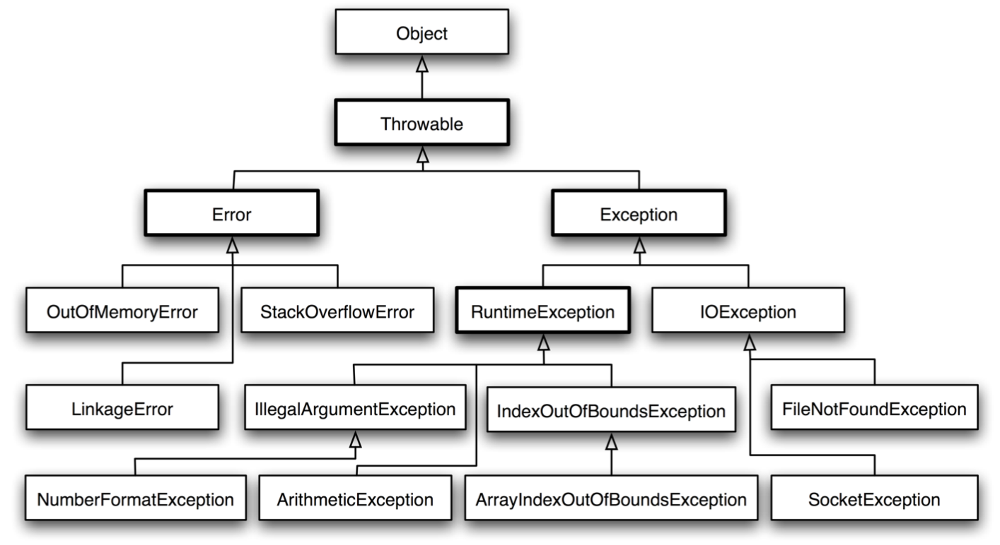

Java异常
异常体系结构
在Java API中已经定义了许多异常类，这些异常类分为两大类，错误Error和异常Exception。它们都继承自java.lang.Throwable。

通过try-cache语句进行捕获处理。
Error
Error，它表示不希望被程序捕获或者程序无法处理的错误。Error类对象由 Java虚拟机生成并抛出，大多数错误与代码编写者所执行的操作无关。例如：
1、Java虚拟机运行错误（Virtual MachineError），当JVM不再有继续执行操作所需的内存资源时，将出现 OutOfMemoryError。这些异常发生时，Java虚拟机（JVM）一般会选择线程终止；
2、发生在虚拟机试图执行应用时，如类定义错误（NoClassDefFoundError）、链接错误（LinkageError）
这些错误是不可查的，因为它们在应用程序的控制和处理能力之外，而且绝大多数是程序运行时不允许出现的状况。对于设计合理的应用程序来说，即使确实发生了错误，本质上也不应该试图去处理它所引起的异常状况。在Java中，错误通常是使用Error的子类描述。
Exception
Exception，它表示用户程序可能捕捉的异常情况或者说是程序可以处理的异常。其中异常类Exception又分为运行时异常（RuntimeException）和非运行时异常。
Error和Exception的区别：Error通常是灾难性的致命的错误，是程序无法控制和处理的，当出现这些异常时，Java虚拟机（JVM）一般会选择终止线程；Exception通常情况下是可以被程序处理的，并且在程序中应该尽可能的去处理这些异常。
运行时异常RuntimeException
该类型的异常自动为你所编写的程序定义ArrayIndexOutOfBoundsException（数组下标越界）、NullPointerException（空指针异常）、ArithmeticException（算术异常）、MissingResourceException（丢失资源）、ClassNotFoundException（找不到类）等异常，这些异常是不检查异常，程序中可以选择捕获处理，也可以不处理。这些异常一般是由程序逻辑错误引起的，程序应该从逻辑角度尽可能避免这类异常的发生。
非运行时异常
RuntimeException之外的异常我们统称为非运行时异常，类型上属于Exception类及其子类，从程序语法角度讲是必须进行处理的异常，如果不处理，程序就不能编译通过。如IOException、SQLException等以及用户自定义的Exception异常，一般情况下不自定义检查异常。
检查异常与不受检查异常
不受检查异常为编译器不要求强制处理的异常，检查异常则是编译器要求必须处置的异常。
检查异常
在正确的程序运行过程中，很容易出现的、情理可容的异常状况，在一定程度上这种异常的发生是可以预测的，并且一旦发生该种异常，就必须采取某种方式进行处理。
除了RuntimeException及其子类以外，其他的Exception类及其子类都属于这种异常，当程序中可能出现这类异常，要么使用try-catch语句进行捕获，要么用throws子句抛出，否则编译无法通过。
不受检查异常
包括RuntimeException及其子类和Error。